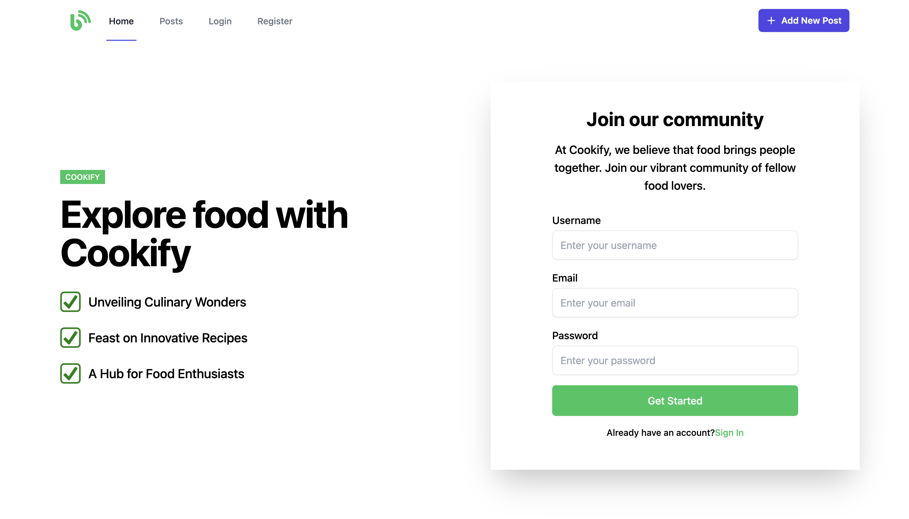
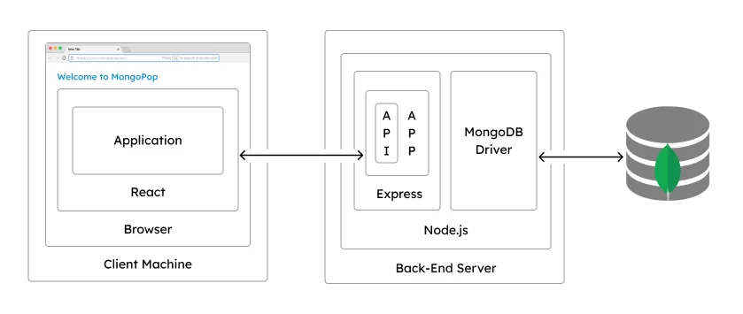

Cookify Social Platform
Intorduction
Cookify is an innovative social platform designed for food enthusiasts to share, discover, and connect through their love for cooking. Whether you're a professional chef, a home cook, or simply someone who enjoys trying out new recipes, Cookify provides a vibrant community where users can showcase their culinary creations, exchange recipes, and inspire others with unique food ideas.

On Cookify, users can create personal profiles to share their favorite dishes, follow other food lovers, and interact through comments and likes. The platform encourages creativity and experimentation, allowing users to explore diverse cuisines, discover trending recipes, and even participate in cooking challenges. Additionally, Cookify integrates features such as meal planning, ingredient shopping lists, and step-by-step cooking tutorials, making it a one-stop solution for all things food-related.
Whether you want to learn new cooking techniques, find meal inspiration, or simply connect with fellow food lovers, Cookify offers a fun and engaging space to satisfy all your culinary interests.
Stack

This project requires:
- MongoDB
- Express.js
- React
- Node.js
- Google Cloud Platform
Functionality

We use Node.js and d3.js to visualize the Finland map and weather data. A Node.js server subscribes to the forecast topic to retrieve updated information and leverages WebSocket technology to push the data to the frontend in real time, enabling users to receive live updates directly in their web browsers. d3.js is primarily used to render maps of Finland and visualize weather data. It loads geographic data in GeoJSON format and then scales and centers the map within SVG containers. Using D3's geoMercator projection and geoPath, the code draws the outlines of Finland's municipalities. When new weather data is received via a WebSocket, D3 dynamically creates circles on the map to represent current and forecasted weather conditions at various locations. The color and positioning of these circles are determined by temperature and weather type, enabling a real-time visual representation of the weather across Finland.
Test
We use Node.js and d3.js to visualize the Finland map and weather data. A Node.js server subscribes to the forecast topic to retrieve updated information and leverages WebSocket technology to push the data to the frontend in real time, enabling users to receive live updates directly in their web browsers. d3.js is primarily used to render maps of Finland and visualize weather data. It loads geographic data in GeoJSON format and then scales and centers the map within SVG containers. Using D3's geoMercator projection and geoPath, the code draws the outlines of Finland's municipalities. When new weather data is received via a WebSocket, D3 dynamically creates circles on the map to represent current and forecasted weather conditions at various locations. The color and positioning of these circles are determined by temperature and weather type, enabling a real-time visual representation of the weather across Finland.
CI/CD
We use Node.js and d3.js to visualize the Finland map and weather data. A Node.js server subscribes to the forecast topic to retrieve updated information and leverages WebSocket technology to push the data to the frontend in real time, enabling users to receive live updates directly in their web browsers. d3.js is primarily used to render maps of Finland and visualize weather data. It loads geographic data in GeoJSON format and then scales and centers the map within SVG containers. Using D3's geoMercator projection and geoPath, the code draws the outlines of Finland's municipalities. When new weather data is received via a WebSocket, D3 dynamically creates circles on the map to represent current and forecasted weather conditions at various locations. The color and positioning of these circles are determined by temperature and weather type, enabling a real-time visual representation of the weather across Finland.
Deployment
Run Locally
-
Create a file
.envinCookify/backend, which stores the environment secret data- MONGO_URI=
- JWT_KEY=
- GMAIL_USER=
- GMAIL_PASS=
- CLOUDINARY_CLOUD_NAME=
- CLOUDINARY_APIKEY=
- CLOUDINARY_API_SECRET=
- BACKEND_URL=
- PORT=9080
-
Set
baseURLinfrontend/src/utils/baseURL.jstohttp://localhost:9080 -
Under
Cookifyfolder, open one terminal, and runcd backendandnpm installto install environment for backend. Runnpm startto start the backend service. -
Under
Cookifyfolder, open another terminal, and runcd frontendandnpm installto install environment for frontend. Runnpm startto start the frontend service.
Visit http://localhost:3000
Run on Cloud
- Set your Google Cloud Platform account
- Create a project
-
Run
git clone https://github.com/DralnMatthew/Cookifyin Google Shell -
Set
baseURLinfrontend/src/utils/baseURL.jsto/api/v1 -
Like the environment variables in
.envin Cookify/backend, modify them ink8s/deployment.example.yaml. In addition, change<PROJECT_ID>- MONGO_URI=
- JWT_KEY=
- GMAIL_USER=
- GMAIL_PASS=
- CLOUDINARY_CLOUD_NAME=
- CLOUDINARY_APIKEY=
- CLOUDINARY_API_SECRET=
- BACKEND_URL=
- PORT=9080
-
Run
bash setup.shin Google Shell to install environment -
Run
bash deploy.shin Google Shell to make deployment on GCP -
Run
kubectl get servicein Google Shell to get the IP address. -
Run
kubectl get podsin Google Shell to see backend output information
Acknowledgements
The website template was borrowed from Michaël Gharbi and Ref-NeRF.